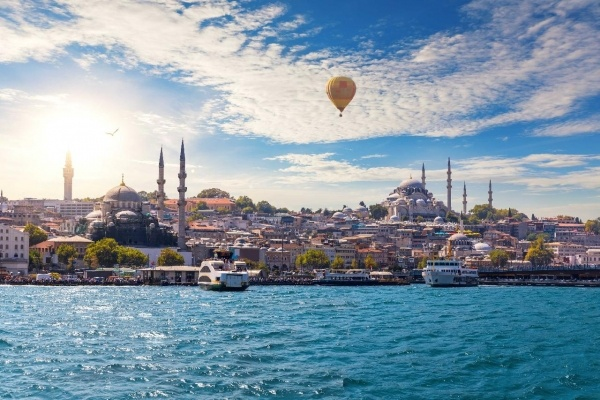

<<<<<<< HEAD

A sokszínű, látnivalókban, műemlékekben gazdag várost évente több millió turista keresi fel. Különleges a város kulturális kavalkádja, a mecsetek, a templomok, a minaretek, a paloták egyvelege, a régi és új, a tradicionális, és a modern, a kelet és a nyugat izgalmas keveredése.
Pamukkale
=======
A sokszínű, látnivalókban, műemlékekben gazdag várost évente több millió turista keresi fel.
Különleges a város kulturális kavalkádja, a mecsetek, a templomok, a minaretek, a paloták egyvelege, a régi és új, a tradicionális, és a modern, a kelet és a nyugat izgalmas keveredése.
>>>>>>> 0a2408889a23abdd16c70cafc000468defcea7dd